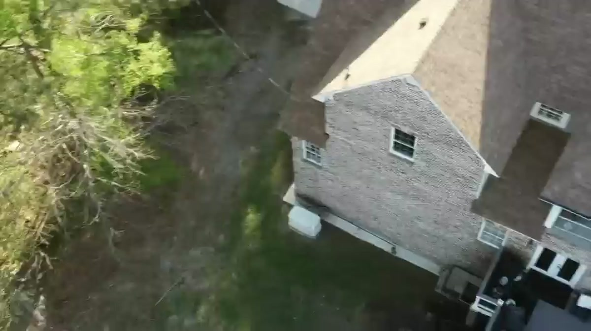

01 / Water stain or leak
Water where it shouldn’t be.
A new ceiling mark. A damp patch near a window. A drip that appears when it rains. Start with the place you noticed it.
A mark inside is a clue, not a diagnosis. The conversation needs to connect what you can see with the roof above it.
A USEFUL FIRST NOTE
Start with this concernWhere does it appear? Is it constant, or does it follow rain?